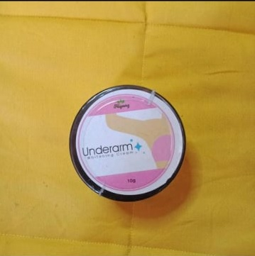

₱200
CHARCOAL ORGANIC SOAP
detoxifies, attracts and absorb impurities effectively. This is how it is able to unclog pores and remove dead skim cells from the top layer if the skin which results in smooth, clean, radiant and healthy skin. It also provides natural deodorizer.

₱200
OATMEAL ORGANIC SOAP
incredibly soothing and extra-nourishing! Oatmeal has anti-inflammatory properties and is perfect for most skin types, even to the most sensitive skin. It contains saponins, a mild cleansing agent. It helps remove dead skin cells. It is also known to have good exfoliating and skin lightening effects.
₱200
PAPAYA ORGANIC SOAP
has powerful exfoliating properties that make it useful for removing dead skin and rejuvenating dry and flaky skin. Using the extract of papaya, it can bring shine and glow to your skin because of the Vitamin E in papaya.

₱200
MALUNGGAY ORGANIC SOAP
helps slow down signs of aging, stimulates skin regeneration and renewal, improves skin elasticity. Malunggay dried leaf powder is the main ingredient of this beauty soap and has the ability to maintain a younger-looking and lovely glowing skin.
₱200
KOJIC PAPAYA INTENSIVE WHITENING SOAP
has powerful exfoliating properties that make is useful for removing dead skin and rejuvenating dry and flaky skin. Formulated to make your beauty regimen effortlessly through the combination of kojic acid and papaya extract.
₱200
HIYANG ORGANIC DEO SOAP /h2>
specially formulated to kill and inhibit the growth of bacteria that cause body odor in skin areas that are prone to perspiration such as armpits, genitalia, feet, and toes.

₱200
GLUTA MILK ORGANIC SOAP
is a perfect combination for skin whitening. Goat’s milk contains protein and lactic acid that makes the skin soft and moisturized. Gluta milk also contains Vitamin A and D.

₱125 SRP(EACH)
HIYANG LIP AND CHEEK TINTS (5 SHADES)
Hiyang Lip and cheek tints are lip tints which are mild and gentle when applied. All these tints have the properties to heal cracked and damaged lips. All of these tints are also fragrant and organic because these were made out from plant extracts

₱265
• HIYANG SNAIL ULTIMATE SERUM
a special serum infused with 24k Gold to nourish the skin providing a dewy and moisturized looking skin. This is a serum that is best for all skin types as it heals skin problems in all types as well as it hydrates the pores through its cool sensation by application of the product.

₱125 SRP
• UNDERARM WHITENING CREAM
highly specialized to improve the tone and lighten the underarm. It is a non-sticky cream that moisturizes the armpits and best used when paired with Hiyang scrub.
₱125 SRP
• HIYANG FACIAL CREAM (with SPF 60 and Vitamin E)
best for moisturizing and in reducing the aging of the skin. Moreover, it minimizes the appearance of wrinkles and blemishes.

₱185 SRP
• HIYANG SHEA BUTTER LOTION
best for rejuvenating tired skin. It has shea butter and olive oil as its potent ingredients which are also best intensive effect in whitening. It is also known for lightening stretch marks, hydrating dry skin, and moisturizes skin.

₱145 SRP
• HIYANG BASE SUNCREAM (FACIAL CREAM)
a sunscreen with SPF 50 PA +++, which is perfect for protecting your skin against the hot weather. Protect your skin against the harmful radiations and skin-damaging sun rays, use our organic sunscreen.

₱
HIYANG HERBAL COFFEE
...
₱165
• HIYANG FEMININE WASH
a guava- based extract organic feminine wash safe for cleansing, moisturizing, and deodorizing the private part
₱225
• HIYANG BODY BLEACHING CREAM
best applied all over the body for a fair-looking skin and toned skin. After application, one can notice its revitalizing property as it stretches the skin looking young and moisturized. It has anti-aging property, collagen powder, vitamin E, Lemon extract, aqua rose water, soya milk, and aloe vera gel that bring nourishment to the overall texture of the skin.

₱185 SRP
• HIYANG LEMON AND GREEN PAPAYA LOTION with SPF 30
helps removes scars with excellent formulation and extracts to whiten and moisturize your skin.
₱199 SRP
• HIYANG ALPHA ARBUTIN LOTION
helps in treating uneven skin tone. It is infused with bearberry for super-whitening effects.
₱145 SRP
• HIYANG CUCUMBER ORGANIC TONER
best known for its pimple killing property as well as pore minimizing ingredient. With the mild and effective property of cucumber in cleaning the pores, this toner is also a great facial cleanser. Surely organic and safe for your skin!

₱120
• HIYANG MALUNGGAY LINIMENT OIL
best for relieving any kinds of pains as well sinusitis, insect bites, dysmenorrhea, psoriasis, and helps neutralizes blood pressure and allergies.

₱85 SRP
• HIYANG MILK & SALT BODY SCRUB
is best for skin whitening, anti- wrinkle purpose, and moisturizing. It is enriched with Vitamin B3, Vitamin E, Collagen, natural salt benefits, milk and yoghurt protein. Overall providing nourishment to the skin.
₱130 SRP
HIYANG MASSAGE RUB
relaxes tired muscles! It contains the highest quality essential oils that are absorbed through the skin. Kaya for your temporary relief of minor aches and pain.

₱145 SRP
• HIYANG ORGANIC CHARCOAL MASK
is a peel- off mask that remove impurities and clear up acne. It penetrates and clarifies the skin, removing dirt from pores.

₱245 SRP
• HIYANG ROSE SHAMPOO
best for dry and flaky hair. It is made from natural rose water with great benefits in nourishing the hair as well. It treats hair-thinning and coconut and sweet almond oil best for shinny and strong hair.
₱145 SRP
• HIYANG ROSE WATER ORGANIC TONER
specially formulated with rose water as the main ingredient for intensive whitening. This toner is best for the purpose of whitening pimple scars, in removing blemishes, and for skin rejuvenation. Its mild property will refresh the skin, leaving a soft texture and fragrant smell.
₱169 SRP
• HIYANG COMBI ORGANIC TONER
the combination of rose water and cucumber and has the two properties of the two ingredients: cucumber and rose water fused in one bottle. It is pimple killing and rejuvenating at the same time.
₱169 SRP
• HIYANG STRAWBERRY RED ORGANIC LIP AND CHEEK TINT
is best for lighter skin types providing the shade of a strawberry that gives a fresh red appearance. It was made out from beetroot and hibiscus extract for the red tint.
₱169 SRP
•HIYANG CRANBERRY RED ORGANIC LIP AND CHEEK TINT
TINT is best for MORENA skin types because of its darker red shade providing a valiant looking red. It came from rose water, cranberry extract and grape seed oil.
₱169 SRP
•HIYANG PIGEON PINK ORGANIC LIP AND CHEEK TINT
is best for lighter skin types as it gives off a teen pink appearance. It was made out from rose water, grape seed oil, and hibiscus extract.
₱169 SRP
HIYANG ORANGE MARMALADE ORGANIC LIP AND CHEEK TINT
is best for lighter skin types as it gives off an orangey shade. It came from rose water, begonia extracts, and grape seed oil..
₱169 SRP
HIYANG PANSY FANTASY ORGANIC LIP AND CHEEK TINT
is best for MORENAs out there! It gives off the darkest shade among all tints giving a strong impact, best for independent women figures. It came from rose water, wild pansy extract, and grape seed oil.
₱150 SRP(1kL)
• Hiyang Detergent Powder
easy to use and remove the dust, dirt, grease, oil and other environmental pollutants with ease and effectiveness..
₱65 SRP
•• Hiyang Dishwashing Liquid
has anti-bac and intensified grease-cutting power to remove oils in dishes and other kitchen utensils.
₱130 SRP
• MORINGGA PLUS
with Kalabo and Serpentina. It is a super liniment with excellent formula of malunggay extract, sambong, serpentina, oregano extract, peppermint, and menthol herbs. This is best for muscle pains, headache, arthritis, back pain, varicose, etc.
₱150 SRP
• ICARE BRAZILIAN BLOWOUT
for a shiny and salon-looking hair.
₱180 SRP
• LUXIME REVIVAL SET
an aloe vera-based rejuvenating set best for its whitening property leaving the skin clear and glowing. It has an aloe vera toner, cream for night and day, as well as a gluta-kojic soap.


{kind=link}
{kind=link}
{kind=link}
{kind=link}
{kind=link}
{kind=link}
{kind=link}
{kind=link}
{kind=link}
{kind=link}
{kind=link}
{kind=link}
{kind=link}
{kind=link}
{kind=link}
{kind=link}
{kind=link}
{kind=link}
{kind=link}
{kind=link}
{kind=link}
{kind=link}